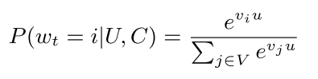
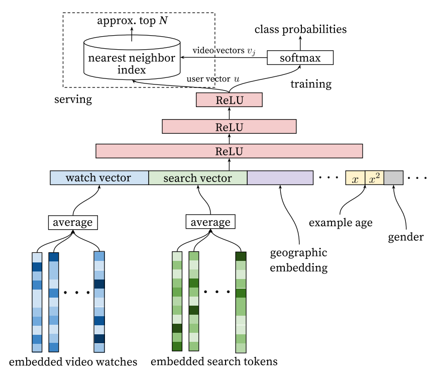
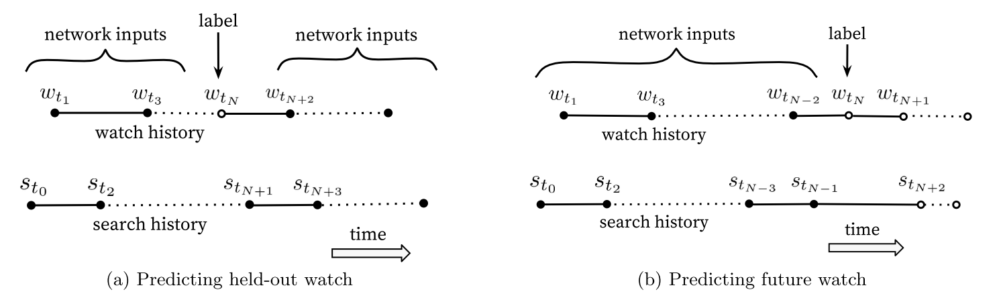
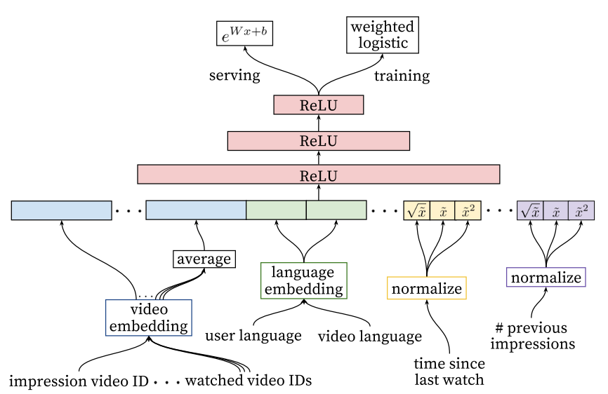

读YouTube深度学习推荐系统论文：Deep Neural Networks for YouTube Recommendations
概览
系统分为召回阶段（candidate generation）和排序阶段（ranking）。召回阶段使用了协同过滤，用户间的相似性可以用粗粒度的特征来计算，比如看过的视频、查询的关键词、人口属性等，召回阶段会将百万的待推荐视频缩减到几百（这里细节应该是这样，先选出相似的用户，然后选取这些用户近期的观看视频为候选集）。排序阶段则直接使用更细粒度的特征进行建模，对待推荐视频逐个打分，按打分倒序取（取1个或多个）。
离线阶段评判使用precision/recall/ranking loss等指标，在线评判使用A/B测试。
召回阶段
视为分类器
我们将库中所有的视频作为分类目标，有多少视频就有多少分类，所以这是一个非常多分类的多分类器。用户在某个时间对某个视频感兴趣，那label的onehot中，这个视频对应的index就是1，其他index就是0。我们具体看一下公式：

这里的\(V\)代表视频库，\(U\)是用户，\(C\)是上下文。这个公式是视频和用户的embedding进行内积，实际不是这个模型，而是使用深度学习模型，后面会将具体怎么建模，这个公式只是表达在做多分类。我们根据这个模型可以得到用户的embedding，然后可以用于召回阶段计算相似度。
然后说一下，如何得到用户是否对某个视频是否感兴趣，虽然YouTube有明确的表示用户是否偏好该视频（比如大拇指按钮等）。但这里仍会考虑隐式的偏好，比如看完了该视频，就认为感兴趣，这样能增加很多样本。
另外，由于这个分类器class数是在太多了（百万级别），所以它参考了word2vector的训练思路，使用了负类采样，也就是在所有的负类class中选取几千个进行反向传播更新参数。它也尝试了hierarchical softmax，但效果不佳，可能是因为不同分类之间并没有树状结构那样的关系。
文中还提到了高维向量相似性搜索也需要使用特殊的技术，给出了一个参考论文。我没具体看，不过我了解的高维向量相似性搜索技术有：KD-Tree（不过一般都是单机？可能一般并用不上）、局部敏感hash、PQ算法（python的fassi包就使用了这个算法）。
借鉴W2V的CBOW
将用户观看历史看做文章，用上下文的词预测中间的词。不过这里并不是简单的将词换成视频训练就好了，YouTube用了更复杂的方法，它用了观看视频的历史和搜索的历史以及一些其他特征做了一个更复杂的深度网络，来学习这些embedding，具体看下图：

另外，该模型增加了”Example age”特征。在实际中，每秒钟都有新的视频被上传到YouTube，用户会偏向于看新视频，而模型基于历史数据训练，所以模型会有偏。为了解决这个问题，它增加了样本的age，也就是样本距离现在的天数，给模型一个信息，这个样本是老的还是新的。而在预测时，这个特征会设置为0或者负数，表示这个样本特别新。
训练细节
在推荐系统中的模型目标跟我们真正的目标使用差别的，模型的目标是提高metrics，而推荐系统的目标可能是留存、观看时长等，这种场景下没法建立一个完全匹配的模型，所以只有通过A/B测试我们才能知道业务上到底是否有提升。而我们的模型相当于是一个代理问题（a surrogate problem），一定跟业务目标是有gap的，这点需要注意。
训练细节：
-
训练数据使用能收集到的所有数据，不仅限于YouTube主动向用户推荐的视频。
-
让每个用户保持相同的训练样本进行训练，也可以通过调整样本权重使每个用户影响loss的程度相同。这样防止非常活跃的用户影响整体用户的偏好。
一些反直觉的点：
-
小心分类器过拟合代理问题，比如用户搜索了某明星，那么进行下一次推荐时，历史样本中最后一个搜索词就是该明星，所以模型很可能会推荐该明星，但这时推荐系统的效果就不太好。所以在训练模型时不要考虑搜索历史的时序性，使用无序的词袋方法会更好。（个人看法：其实直觉上我觉得再推荐该明星也没问题，所以他们应该做过数据分析，分析出这种形式的推荐效果并不好，在自己的业务中我觉得最好通过数据分析证明这个事情再去进行相关的调整）
-
注意不要泄露未来的信息，训练时不要使用某样本的前后样本做特征，只使用这个样本之前的样本做特征，以防泄露未来的信息。下图说明了这个问题：

排序阶段
排序阶段相较于召回阶段会使用更多的特征和更复杂的模型，因为经过召回阶段，候选集缩减至几百，完全可以做更复杂的模型。另外，业务目标是让用户在视频上的观看时间尽量长，所以排序阶段的objective函数尽量去跟业务目标一致，objective通过A/B测试来对比（我的理解是，设计很多目标函数，看哪个跟业务目标最接近）。
排序阶段也是使用深度学习模型，很多思路跟召回阶段相似，具体网络如下：

特征思路
-
跟其他用户历史观看记录的匹配度，比如用户A在某频道看了多少视频，跟其他用户在该频道看了多少视频的匹配度。或者最后一次观看时间等等。
-
该候选视频是哪个召回策略提供的？给了多少分？
-
如果给用户推荐了视频，但是他没点，我们需要给他降权（用特征的形式？）
-
视频展示的即时性非常重要，影响展示时间的因素是否可以考虑？
离散特征
离散特征直接做embedding，对于视频ID这种类别非常多的特征，会选取topN个频繁点击的类别。如果某视频不在embedding的列表中，就映射到一个zero embedding。对于multivalent（也叫multi-hot）的特征，就是这种特征是一个列表，它有可能出现多个值，比如近期看了哪些视频IDs，这种情况就取embedding的平均值。
另外，各种特征embedding是共享的，可以从上面的网络看出，曝光和近期观看的视频embedding都是共享的。
连续特征
神经网络对于连续特征的量级非常敏感，所以连续变量的处理非常重要。
论文的做法是将连续变量映射到累计分布上，就是将所有特征值排序，看某个值在百分之多少的位置上，通过这种方法映射到0和1之间。另外加入处理后的特征值的根号和平方来拟合非线性的特性。
样本权重
点击了视频作为正样本，未点击作为负样本。正样本使用观看时长作为样本权重，而负样本使用1为样本权重。论文从几率的角度解释这样的意图是为了学习观看时长的期望，不过细节我没有看太懂（TODO）。